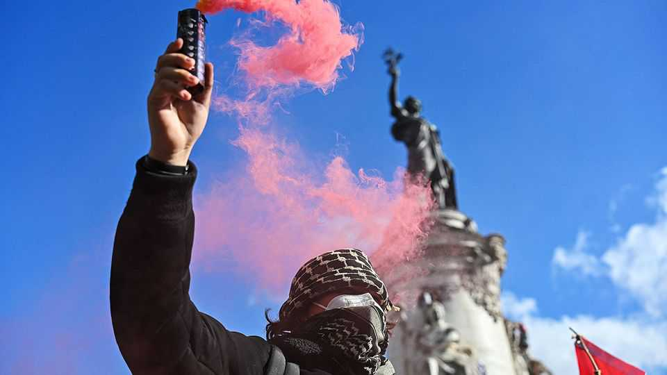

Politics
The world this week

Oct 22nd 2026
Curfews were imposed in Paris, Lyon and other cities following the worst rioting and looting in France in years. More than 2,000 people were arrested as masked casseurs, or hooligans, targeted shops, businesses and political premises. The roof of the town hall in Limoges, which withstood two world wars, collapsed after it was set on fire. The government admitted the police had lost control of the protests. The French president addressed the nation and said “nothing justifies” the violence. Marine Le Pen, the right-wing front-runner in next year’s presidential election, warned of a threat to democracy and blamed Mr Macron and the left. Jean-Luc Mélenchon, the left-wing’s candidate, denied he was stirring up trouble by urging support for the protests.
Widespread looting accompanied similar protests in Italy. The government announced new security steps that allow the police to detain under-18s for 12 hours, among other measures. To prevent further unrest hundreds of soldiers were deployed to Milan, which has borne the brunt of the trouble and saw luxury-goods shops ransacked.
In Albania student-led protests over corruption, poor education and a lack of jobs spread from Tirana to other cities and towns. Riot police used tear-gas and rubber bullets against the demonstrators when they reached the Ministry of Education. Edi Rama said he would not resign as prime minister, and warned that the protesters were endangering Albania’s path to membership of the EU.
Volodymyr Zelensky flew to Oslo for a meeting with Steve Witkoff, Donald Trump’s envoy, amid a deterioration in relations between Ukraine and the White House. Earlier, Mr Trump took another step towards favouring Russia by waiving sanctions mandated by the Graham Act, which he signed into law last month. Mr Zelensky criticised Mr Trump’s waiver, arguing that the act was “supposed to impose truly effective pressure on Russia”. The Americans described the meeting in Oslo as constructive. Mr Witkoff then flew to St Petersburg for talks with Vladimir Putin. The Kremlin said Mr Putin had agreed to restart three-way peace talks.
At his meeting with Mr Witkoff Mr Putin announced that Stephen Hubbard, an American citizen, had been released from prison. Mr Hubbard, 74, was arrested in 2022. The Russians claim he was manning a checkpoint in Ukraine; his family have rejected accusations that he is a mercenary. His release is another indication of Mr Trump’s closer relations with Moscow. The president had personally called on Mr Putin to set Mr Hubbard free.
Britain said it would deploy fighter jets and a transport aircraft to Saudi Arabia to help defend the kingdom against attacks by the Houthis, Yemeni rebels backed by Iran. The jets will help protect infrastructure and residential areas, but will not conduct offensive strikes against the rebels. In Yemen the Houthis fired missiles at a training camp for government forces, killing at least 73 people. The Yemeni government is allied with the Saudis.
Egypt’s president, Abdel-Fattah al-Sisi, also pledged to help the Saudis, and asked parliament to approve the deployment of combat forces. The extent of any Egyptian involvement in the conflict is unclear. Turkey’s parliament was also considering a plan to send military personnel to Saudi Arabia.
More than 80 people were killed in a drone strike near a market in southern Sudan, most of them commuters on their way home from work. The Rapid Support Forces, which controls the area, blamed the strike on the army, which it is fighting in a civil war. Another drone hit a town in a disputed region near the border with South Sudan, killing at least 150 people. Such attacks causing mass civilian casualties have become increasingly common in the three-year conflict.
A former Rwandan soldier and vocal critic of Paul Kagame, Rwanda’s president, was found beheaded near Kampala, the capital of neighbouring Uganda. Robert Kabera, who fled to Uganda in 2020, had recently posted on social media that he feared for his life. He is not the first exiled Rwandan dissident to turn up dead in gruesome circumstances.
Nigeria confirmed its first case of Ebola since the Democratic Republic of Congo announced an outbreak of the disease in May. Authorities said the patient had travelled to Nigeria from Uganda. The Ugandan government said there were currently no active cases of the disease in the country.
America’s State Department reported that 300,000 visas have now been revoked during Donald Trump’s second term, up from the 175,000 that had been tallied up to early August. Announcing the new numbers an official reiterated the administration’s policy: “zero tolerance for foreigners here on visas who break the law”.
A non-binding referendum in Alberta saw more than 75% of voters back an option to remain a province of Canada, rather than start the process of holding a binding referendum on splitting away. Mark Carney hailed the outcome as a victory for “unity”. “Canada is so much greater than the sum of its parts,” he said. However, Albertans did back other measures in the referendum to give the province more control over immigration.
Luiz Inácio Lula da Silva and Flávio Bolsonaro debated each other ahead of Brazil’s presidential election run-off on October 25th. Polls show the race has narrowed since the first round on October 4th, when Mr Bolsonaro took 47% of the vote to Lula’s 45%.
Marco Rubio, America’s secretary of state, met Subrahmanyam Jaishankar, India’s foreign minister, in Mumbai for talks on finalising a trade deal. The pact has been held up for months because of tensions over American tariffs and India’s purchase of Russian oil. But Mr Rubio now says an agreement is “very, very close”.
More than 9,500 police officers were deployed in Jakarta to deter student-led protests that were called to mark the second anniversary of Prabowo Subianto’s inauguration as Indonesia’s president. The deterrence worked, as few students gathered to demand Mr Prabowo do more to tackle the cost of living and other grievances. The president’s approval rating has plunged since taking office. MSCI, a global index service, warned that it might remove Indonesia’s emerging-market status because of its “market dysfunction”. Downgrading Indonesia would force many tracking funds to sell their Indonesian assets.
Japan’s space agency launched a spacecraft on a five-year mission to collect samples from Phobos, one of two small moons that orbit Mars, the first-ever return journey from the planet’s system. The spacecraft will enter Martian space in August 2027, landing on Phobos at some point in the following years. A rover will use a robotic arm to collect moondust. If all goes well, the spacecraft will depart in 2030 and return to Earth in 2031.